World Models for Sim2Real Style Transfer
Can ten minutes of real video make a simulator look real enough to evaluate and train robot policies? A controlled study on one hard task.
Summary
We fine-tuned a video world model (Cosmos3-Nano) on about ten minutes of real footage and used it as a renderer: the physics simulator keeps advancing the state, the model repaints every frame to look like our cameras. We call the result augmented simulation, or augsim.
The task is tight-tolerance gear insertion with a Franka FR3, three cameras, and ACT policies trained on scripted demonstrations. Every policy is run on the same 16 seeded scenes in raw sim, in augsim and on the real robot.
1. Why improve what the simulator shows
A simulator can be right about the physics and still mislead you, because the policy never sees physics. It sees pixels.
Our first visuomotor policy inserted the gear in 16 of 16 simulated scenes and in 8 of 16 on the robot. That alone would be a calibration problem. The worse problem showed up when we had three policies to compare: the simulator ordered them backwards from the robot, and would have told us to deploy the one that never grasped a gear in the real world (section 4).
The usual remedies are domain randomization and hand-built photorealism. We tried the hand-built route, matching the simulator's table, lights and camera response to the real frames and randomizing around them. The policy trained there was the worst on the robot (section 5). The real table has wood grain; nothing we randomized covered texture.
Image-to-image style transfer repaints each frame independently and re-samples the texture every time, so the stream flickers. A video model can repaint a whole stream consistently, and models conditioned on structure (edges, depth) keep the geometry that the task depends on. The open question was whether a few minutes of one scene are enough to adapt such a model, and whether a policy's behavior in the repainted simulator says anything about its behavior on the robot.
We chose a hard task on purpose. The gear has sub-millimeter clearance on the shaft, so every error source shows up at once, and we can separate what appearance fixes from what it cannot.
2. Building the augmented simulator
The simulator keeps the state; the world model only replaces what the cameras would see.
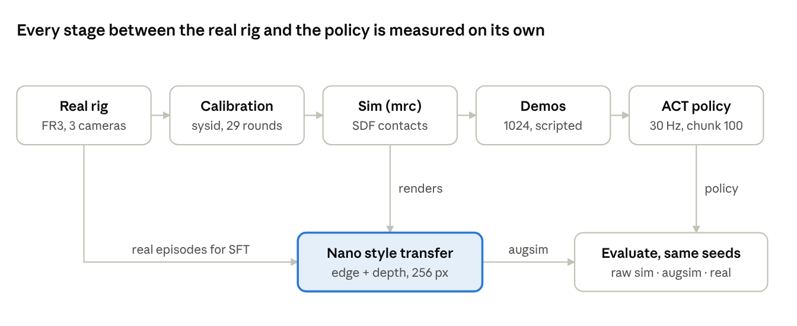
- Simulator. MuJoCo with a port of the real robot's Polymetis controller, signed-distance-field contacts for the gear and shaft, and cameras from the current real calibration. The same engine collects the demonstrations, evaluates policies and drives augsim.
- Policy. ACT with three 224-pixel camera views and proprioception, predicting chunks of 100 joint-target actions at 30 Hz. Trained by behavior cloning on scripted full-insertion demonstrations; no recovery data.
- Real footage for adaptation. 20 episodes of the scripted controller on the real robot, about ten minutes of recording seen by all three cameras. Separate from the policy demonstrations, which are simulated.
- Conditioning. Edges and inverse depth rendered by the simulator, not estimated from video; a fixed caption. Estimating the controls from real video instead gave lower fidelity and invented grippers, and adding a segmentation channel merged gripper and gear, so both were dropped.
- Adaptation. Cosmos3-Nano (8 B parameters) post-trained at 256 pixels on windows sampled across whole episodes. An early version trained on episode centers with a bad wrist mask lost the gear in the repainted frames; the fix raised the grasp rate in augsim from 31 to 50 percent.
- Generation, offline. For training data, whole demonstration streams are repainted autoregressively: 0.06 s per frame, 128 demonstrations times three cameras in 2.7 GPU-hours.
- Generation, online. In the closed loop the policy decides every 100 frames, and each decision frame is repainted on its own in about 2 s. The simulator waits, so the loop is exact but slower than real time.
- Evaluation protocol. 16 seeds fix the gear placement. The same seeds are run in raw sim, in augsim and on the robot, where the scene is placed with a camera overlay. Success means the gear fully seated on the shaft.
3. What adaptation changes visually
The base video model already paints a plausible lab. Adaptation makes it paint this lab: its table, its light, its gripper.
The methods below were tried at different times and under different settings as the project moved, so this is a record of what we learned from each, not a controlled benchmark. A matched video of every method on one trajectory is pending.
| Method | What it gave us |
|---|---|
| Raw sim, matched by hand (ref_sim) | Color and lighting within about 12 percent of the real cameras after nine calibration rounds; no texture. Closes a little of the distance on the feature metrics, none on the Inception metric. |
| Image-to-image (img2img-turbo) | 0.15 s per frame, but every frame re-samples the texture; the stream flickers. Kept as a speed reference. |
| Cosmos-Transfer2.5 (official transfer, no scene adaptation) | Our first closed-loop renderer. Geometry mostly preserved; 3.6 s per frame at 720 pixels; the lab it paints is generic. |
| Cosmos3-Nano, base model | Follows prompts (a red gear, sunset light) but the scene is not ours. |
| Cosmos3-Nano, post-trained on ten minutes | Halves the per-frame distance to the real cameras and cuts the video distance by two to three times. Loses prompt following (section 7). |
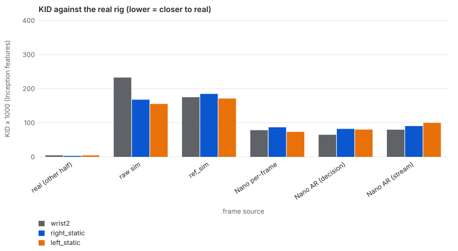
Temporal consistency is the second half. Repainting each frame independently adds 1.6 to 2.0 gray levels of frame-to-frame change beyond the true motion; repainting the stream autoregressively adds 0.3 to 0.5. The video distance (FVD) is lower for the autoregressive stream on all three cameras.
4. Does augmented simulation predict the real robot?
For choosing between policies, yes. For predicting a success rate, no.
We evaluated five policies of different quality on the same 16 scenes in all three settings. They differ in training images and data size, which is what makes them a test of ranking.
| Policy | Training images | Demonstrations | Checkpoint chosen in |
|---|---|---|---|
| 76k | raw sim | 1024 | raw sim |
| raw128 | raw sim | 128 | raw sim |
| nano128 | Nano-repainted sim | 128 | raw sim |
| ref_sim 52k | hand-matched sim with randomization | 1024 | its own sim |
| 52k (Transfer2.5) | raw sim | 512 | raw sim |
Every simulated number is the one measured before its real test, with the cameras that policy was trained and evaluated with. For 76k that is its own calibration (round 27b, raw sim 16 of 16); its augsim run is the exception: it was made after the real test, with the recalibrated cameras (round 29), the only augsim run of that policy. The three newer policies were trained and evaluated under round 29 throughout. The fifth policy, 52k, is an earlier 512-demonstration ACT (October 13): its sim and augsim runs warp the cameras to that day's real poses, and its augsim used Cosmos-Transfer2.5, the renderer before Nano.
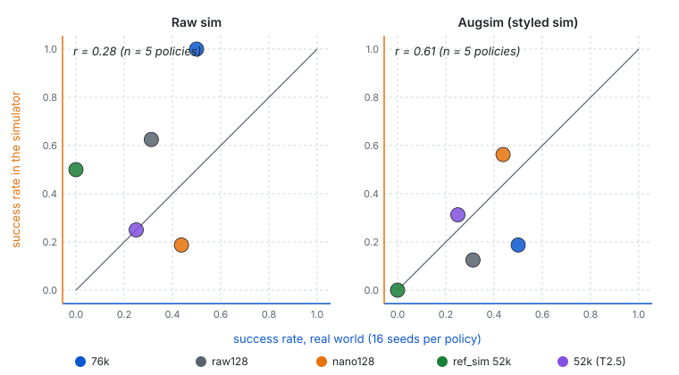
Ranking. The robot ordered the three newer policies nano128, raw128, ref_sim. Augsim gave exactly that order. Raw sim gave the reverse: it put the policy that never grasped a gear in the real world in first place, and the best real policy last.
Per scene. Pooled over the three policies, augsim agreed with the real outcome on 37 of 48 scenes and raw sim on 27. The agreement is not uniform: on nano128, whose training images are themselves Nano frames, raw sim agreed slightly more often.
Absolute rates. Both simulators miss them, in both directions. For the 76k policy raw sim was optimistic (16 of 16 against 8 on the robot) and augsim pessimistic (3 of 16). For nano128 augsim was optimistic (9 against 7).
Failure types. The robot loses scenes before contact: the fingers close beside the gear. Raw sim loses them late, at the shaft. Augsim loses them on the way to the shaft. Neither simulator reproduces the real grasp misses, because those come from a camera-calibration drift and an arm-settling offset that no renderer models (section 6).
5. Do policies trained on styled frames transfer?
A controlled pair: the same 128 demonstrations, the same states and actions, only the training images differ.
- raw128, the control, trained on the raw renders.
- nano128, the treatment, trained on the same frames repainted autoregressively by Nano (2.7 GPU-hours).
- ref_sim 52k, the hand-matched alternative, trained on 1024 demonstrations rendered in the matched, randomized sim with image augmentation.
All three use the same recipe and the same real test: 16 scenes, same cameras, same placements, within two days of each other.
| Evaluated in | raw128 | nano128 | ref_sim 52k |
|---|---|---|---|
| Raw sim | 10 | 3 | 8 |
| Hand-matched sim | — | — | 15 |
| Augsim | 2 | 9 | 0 |
| Real world | 5 | 7 | 0 |
Each policy is best in its own look and weak elsewhere; the row that matters is the last one.
What the real rollouts show. raw128 misses the gear: six of its failures are empty grasps aimed 5 to 12 mm off. nano128 gains at both ends, two more grasps and two more shaft engagements, and still has four empty grasps. Those remaining misses have the same size as the calibration and settling errors in section 6; appearance cannot remove them.
Why the hand-matched sim fails. The ref_sim policy is almost perfect in its own simulator and closes on air on the robot, 15 to 82 mm away from the gear. It learned to find the gear against a plain, texture-less table; the real table has grain, and randomizing color, light and blur never produced grain. Augsim, which draws grain, flagged this policy at 0 of 16 before the real test; raw sim and the matched sim did not.
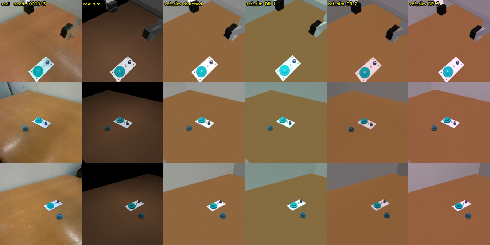
6. How styling changes the policy's decisions
Hold the policy and the state fixed, change only the image, and watch the plan.
Real rollouts store the exact images the policy consumed and the measured joint state at every decision. Before the first close command the scene is still the seed's nominal layout, so we can put the simulated arm at the measured state, render the three cameras, repaint them, and compare the three plans the policy makes from raw sim, augsim and the real image. 128 such matched states over the four policies.
Does the styled frame move the plan toward the real-image plan? Yes, for every policy. The raw-sim plan lies 7 to 18 mm from the plan the policy makes from the real image; the augsim plan lies 3 to 6 mm from it, close to the 2 mm you get by repainting the same frame twice.
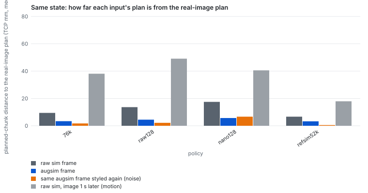
Where in the image? Not where we expected. We assumed the styled gears and gripper would carry the change; they carry almost none of it. Restoring the raw table and background inside the policy's image tokens removes most of the plan shift; restoring the gears removes nothing. The decoder's attention maps are nearly the same for raw, styled and real frames, so this is not a matter of where the policy looks. A direct swap makes it concrete: giving the raw-sim frame the real frame's attention weights closes about a fifth of the gap; giving it the real frame's token content closes about half to two thirds.
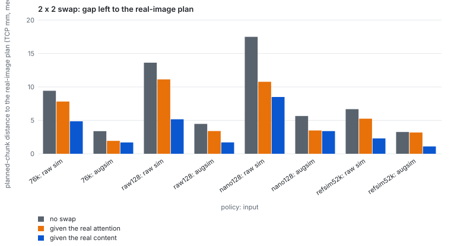
When in the episode? At the first decision. On scenes where raw sim succeeds and augsim fails, the first planned chunk moves by 13 to 19 mm; every later decision moves by 2 to 3 mm. The arm needs about ten seconds to come back, grasps at a different spot, and never seats. Repainting the closed loop autoregressively, which removes the flicker, changed nothing, because the first frame has no history and is repainted the same way.
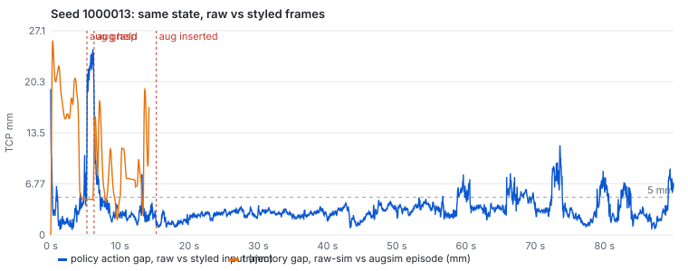
The part no renderer can fix. We replayed the real robot's eight successful action sequences open-loop in the simulator. All eight grasped and lifted; two seated. The tool center of the simulated arm drifts 3 to 4 mm from the real one within a few steps, and 6 to 12 mm during insertion. The real arm settles a few millimeters away from where it is commanded, and a sub-millimeter insertion does not forgive that.
7. Findings, limitations, next steps
What we can claim for this task and setup.
- Ten minutes of real video adapt the video model to one scene well enough that the repainted simulator ranks policies as the robot does and catches a policy that will fail there. It does not estimate success rates.
- Training on repainted demonstrations transferred better than training on raw or hand-matched ones. The effect is a direction, measured with 16 scenes, not a confirmed effect size.
- The mechanism is texture, not attention: the policy reads the table, background and gripper, and the repainting changes what it reads there.
- The remaining real failures are not visual. A camera-rotation drift of a fraction of a degree moves the grasp by a centimeter, and the arm settles millimeters away from its command.
Cost. Ten minutes of footage, a few GPU-hours of post-training, 2.7 GPU-hours to repaint 128 demonstrations, and about 2 s per decision frame in the closed loop.
Limitations.
- 16 scenes per setting; a 95 percent interval spans about plus or minus 20 points.
- One task, one setup, one recording session for the model's real data.
- Per-frame repainting in the closed loop flickers. It did not change the outcome here, but it is a source of plan noise of 1 to 3 mm per decision.
- Geometry errors: under camera shifts of up to 10 degrees the model invented no gears and dropped none, but it sometimes draws the fingers as curved hooks.
- Prompt following is gone after fine-tuning on a fixed caption. The base model turns the gear red or the light to sunset when asked; the adapted model paints the same image for every prompt. That is the lever RoboRender uses to randomize textures and distractors, and we traded it for fidelity.
- Each camera is repainted independently. The color spread across cameras is no larger than the real cameras' own, but multiview consistency is not enforced.
- The matched-state analysis covers decisions before contact; after the grasp the real and simulated scenes no longer match, so what repainting does there is unmeasured.
- No 30 Hz control loop: 2 s per frame rules out online use with the current model.
Next.
- A state-based teacher policy that solves the whole task in simulation (training now on a GPU simulator), then distillation into a visuomotor student on repainted frames. This replaces the scripted demonstrations and gives expert actions for any state.
- Choose the renderer by what it does to learning, not by how it looks: clone one initial policy, train each clone briefly on the same states repainted by a different candidate, and track its action error on real images. The candidate whose error falls fastest wins. Plan:
Augmented_Sim2Real/docs/plan_odlg_20261105.md; a cross-task version is assessed inplan_config_mapping_20261105.md. - Repeat the training comparison with 512 to 1024 demonstrations and checkpoint selection in augsim.
- Model the arm's settling offset in the simulator.
Appendix
A. Per-seed outcomes
Each cell is the furthest stage reached: no grasp, grasped, lifted, engaged (on the shaft), or seated.
76k policy, 16 scenes: raw sim, augsim, real
| Seed | Raw sim, its cameras (round 27b) | Raw sim, recalibrated after the test (round 29) | Augsim (round 29) | Real |
|---|---|---|---|---|
| 1000000 | seated | seated | engaged | no grasp |
| 1000001 | seated | seated | seated | seated |
| 1000002 | seated | seated | lifted | no grasp |
| 1000003 | seated | seated | lifted | lifted |
| 1000004 | seated | seated | lifted | no grasp |
| 1000005 | seated | engaged | engaged | lifted |
| 1000006 | seated | seated | seated | seated |
| 1000007 | seated | engaged | lifted | seated |
| 1000008 | seated | engaged | engaged | seated |
| 1000009 | seated | engaged | engaged | seated |
| 1000010 | seated | seated | engaged | no grasp |
| 1000011 | seated | seated | engaged | seated |
| 1000012 | seated | engaged | engaged | seated |
| 1000013 | seated | seated | engaged | seated |
| 1000014 | seated | seated | seated | no grasp |
| 1000015 | seated | seated | lifted | no grasp |
| Seated | 16/16 | 11/16 | 3/16 | 8/16 |
raw128 and nano128, 16 scenes
| Seed | raw128: raw sim | raw128: augsim | raw128: real | nano128: raw sim | nano128: augsim | nano128: real |
|---|---|---|---|---|---|---|
| 1000000 | seated | engaged | lifted | seated | engaged | seated |
| 1000001 | engaged | engaged | lifted | engaged | lifted | lifted |
| 1000002 | lifted | lifted | no grasp | lifted | engaged | lifted |
| 1000003 | seated | seated | seated | engaged | seated | seated |
| 1000004 | seated | engaged | no grasp | engaged | lifted | no grasp |
| 1000005 | engaged | lifted | no grasp | lifted | seated | lifted |
| 1000006 | seated | no grasp | seated | engaged | seated | seated |
| 1000007 | grasped | no grasp | seated | lifted | engaged | seated |
| 1000008 | seated | lifted | no grasp | lifted | seated | no grasp |
| 1000009 | seated | engaged | seated | engaged | seated | no grasp |
| 1000010 | seated | no grasp | no grasp | seated | seated | lifted |
| 1000011 | seated | engaged | pre-insert | engaged | seated | seated |
| 1000012 | lifted | lifted | pre-insert | engaged | engaged | lifted |
| 1000013 | seated | seated | seated | seated | seated | seated |
| 1000014 | engaged | engaged | no grasp | engaged | engaged | seated |
| 1000015 | seated | engaged | lifted | lifted | seated | no grasp |
| Seated | 10/16 | 2/16 | 5/16 | 3/16 | 9/16 | 7/16 |
52k (Transfer2.5), 16 scenes: raw sim, augsim, real
| Seed | Raw sim (cameras warped to the real poses) | Augsim (Transfer2.5) | Real |
|---|---|---|---|
| 1000000 | engaged | engaged | seated |
| 1000001 | engaged | engaged | lifted |
| 1000002 | engaged | seated | no grasp |
| 1000003 | engaged | engaged | grasped |
| 1000004 | engaged | seated | lifted |
| 1000005 | engaged | engaged | lifted |
| 1000006 | engaged | seated | seated |
| 1000007 | seated | engaged | lifted |
| 1000008 | seated | engaged | lifted |
| 1000009 | seated | seated | seated |
| 1000010 | lifted | engaged | grasped |
| 1000011 | engaged | seated | seated |
| 1000012 | seated | engaged | pre-insert |
| 1000013 | engaged | engaged | pre-insert |
| 1000014 | engaged | engaged | no grasp |
| 1000015 | engaged | lifted | lifted |
| Seated | 4/16 | 5/16 | 4/16 |
Per-seed agreement with the real outcome
| Policy | Raw sim | Augsim |
|---|---|---|
| 76k | 8/16 (predicts every seed seated, κ 0) | 9/16 (κ 0.13) |
| raw128 | 9/16 (κ 0.20) | 13/16 (κ 0.48) |
| nano128 | 10/16 (κ 0.19) | 8/16 (κ 0.02) |
| ref_sim 52k | 8/16 | 16/16 |
| 52k (Transfer2.5) | κ 0.00 | κ 0.54 |
| Pooled, three newer policies | 27/48 (κ 0.07) | 37/48 (κ 0.37) |
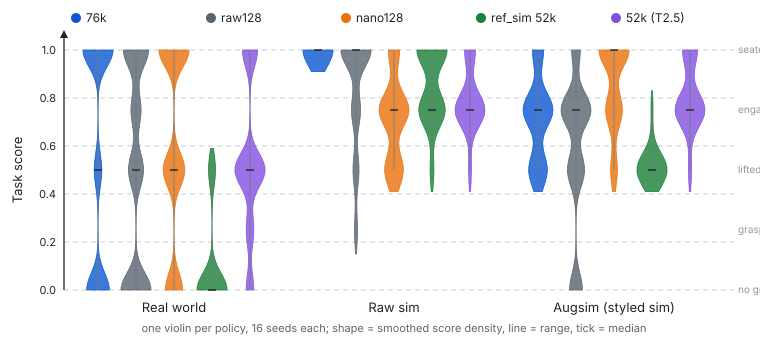
B. Where the pipeline loses accuracy
Across the four policies the robot loses scenes to empty grasps (76k 6, raw128 6, nano128 4, ref_sim 13); the simulators lose them later, at the shaft.
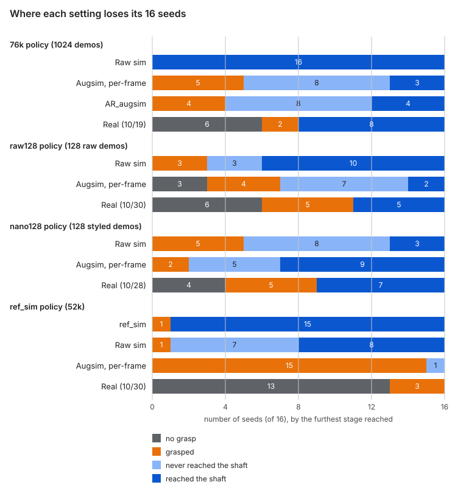
| Stage | Problem found | Fix | What remains |
|---|---|---|---|
| Camera calibration | The cameras moved often; stale poses caused grasp misses | 29 calibration rounds; calibration versioned with each policy | A 0.28-degree drift still moves the grasp 5 to 14 mm |
| Controller | A policy that was perfect in sim failed on the robot: different control law | Port of the real Polymetis controller into the simulator | The real arm settles about 3 mm from its command; 6.75 mm RMS tracking error |
| Collision geometry | Whole-mesh distance fields: false penetration, drifting gear | Split fields, segmented shafts, no contact hacks | Drift in micrometers, penetration under 0.02 mm |
| Hand payload | Mount reconstructed from video | Mesh reconstruction | Modelled 81 g against 177 g real |
| Gripper | Grasp gate against a 29 mm stall; integrator windup | Settle gate; event-style gripper action | Hysteresis and 5 N force matched |
| Initial state | Real scenes were not the simulated scenes until October | Seeds from the sim's nominal poses; overlay placement | Placement error not measured |
| Timing | 60 Hz evaluation against 30 Hz demonstrations; slow simulated gripper | Cadence fix; retimed hand; recollected demonstrations | Real cameras lag about 5 frames |
| Rendering | Raw sim looks nothing like the cameras | Nano repainting | About 20 times the real-vs-real distance |
Getting a policy that works in simulation at all took longer than the renderer. Plain behavior cloning on clean full-insertion demonstrations beat every addition we tried:
| Approach | Best result | Why it stopped |
|---|---|---|
| Staged state-based PPO | 94.5 percent on the chained task | Never distilled to vision under realistic gripper physics |
| SERL / RLPD visuomotor RL | 0 percent in three runs | No signal from the sparse reward |
| Residual PPO on ACT | 53 to 66 percent, did not replicate | Exploration noise larger than the 0.5 mm clearance |
| Reverse-curriculum PPO teacher | 78 percent | Local optimum; grasp-gate defects |
| Teacher to student distillation | 37.5 percent | Plateau, then a dataset bug |
| DAgger with the scripted expert | 18 of 32 to 29 of 32 in round one | Later rounds collapsed: a physics hook broke the expert |
| Residual PPO on the ported simulator | 69 to 77 percent, flat | 1.4 s per environment step |
| Behavior cloning, 1024 demonstrations | 29 of 32 in sim, 8 of 16 real | Remaining failures are pre-contact on the robot |
C. The styler
| Use | Latency |
|---|---|
| Autoregressive stream, 121-frame chunks | 0.057 to 0.064 s per frame; 128 demonstrations times three cameras in 2.7 h on one GPU |
| Closed-loop decision frame, per-frame | about 2.0 s |
| Closed-loop decision frame, autoregressive 101-frame window | 6.2 s per window |
| Cosmos-Transfer2.5, 35 steps, 720 pixels | 3.6 s per frame (7.2 s in the closed loop) |
| img2img-turbo, 1 step, 512 pixels | 0.148 s per frame |
Most of the speed came from cutting the sampling steps from 35 to 10, then from caching the transformer's attention (cache_dit, 14 percent faster at 34 dB PSNR against the uncached output). Before that a closed-loop frame took 7 to 8 s.
Three limit tests on one scene:
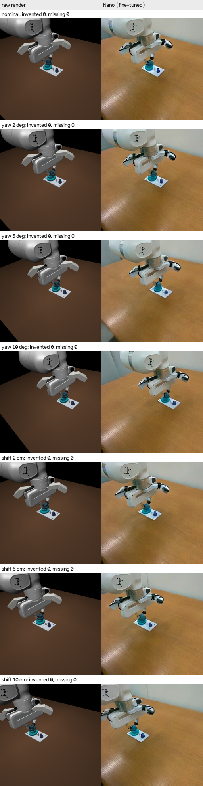
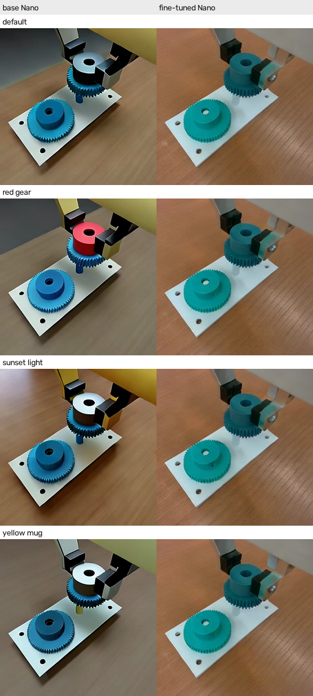
D. Realism metrics
Per camera at 224 pixels against the real frames of the 76k rollouts: KID (Inception features) and FD-DINOv2 per frame, FVD on 16-frame clips. The floor is one half of the real scenes against the other.
| Source (wrist / right / left camera) | KID × 1000 | FD-DINOv2 | FVD |
|---|---|---|---|
| Real, other half (floor) | 4.6 / 2.8 / 4.5 | 66 / 75 / 93 | 154 / 47 / 131 |
| Raw sim | 233 / 168 / 155 | 1531 / 2044 / 2090 | 1803 / 700 / 1038 |
| Hand-matched sim | 175 / 185 / 171 | 1472 / 1574 / 1505 | 1215 / 491 / 683 |
| Nano, per-frame decision frames | 78 / 87 / 73 | 539 / 968 / 894 | — |
| Nano, autoregressive stream | 80 / 90 / 100 | 551 / 964 / 977 | 713 / 255 / 441 |
E. Relation to RoboRender
RoboRender (Huang, Ai, Li Fei-Fei, Jiajun Wu and others, October 2026) asks whether a video model can make simulated data good enough to train real policies at scale, and answers yes for visually driven tasks. This project asks how little real data is enough, whether a repainted sim can evaluate a policy, and what remains when the task is contact-rich.
| RoboRender | This project | |
|---|---|---|
| Base model | Wan2.1-T2V-1.3B | Cosmos3-Nano 8B |
| Real training data | about 127k samples from AgiBot-World and DROID | 20 episodes, one setup |
| Conditioning | Sim depth, robot RGB and mask, a scene prompt, the preceding frame | Edges and depth, fixed caption, autoregressive |
| Multiview | Views stacked into one latent | Each camera on its own |
| Prompt following | Kept | Lost after fine-tuning |
| Use of the renderer | Train a policy on rendered sim, test on the robot | Evaluate policies in the repainted sim; train on it at 128 demonstrations |
| Tasks | Pick-and-place, drawer, fridge, mobile pick | Tight-tolerance gear insertion |
F. Reproducibility
| What | Where |
|---|---|
| Raw-sim and augsim evaluations | jobs/sim_eval_mrc.sbatch, jobs/augsim_nano_eval.sbatch (AR=1 for the autoregressive loop) |
| Real evaluations | wmrl/eval-logs/real_eval_20261019.md (76k), real_eval_20261028_nano128_24k.md, real_eval_20261030_raw128_20k.md, real_eval_20261030_refsim_52k.md |
| Realism metrics | jobs/realism_metrics.py |
| Replay, first-decision and layer probes | jobs/divergence_probe.py, jobs/consumed_regen.sbatch, jobs/act_layerwise.py |
| Flicker and the autoregressive loop | jobs/ar_vs_perframe.py; augsim/infer/nano_mrc_server.py (NANO_AR=1), augsim/t25/closed_loop.py |
| Styled training | jobs/act_style128_lanes.sh, jobs/demo_nano_src.py, jobs/style128.sbatch, jobs/assemble_parts.py |
| Hand-matched sim | wmrl/wmrl/sim/mrc_gear/ref_sim.py, jobs/act_refsim_lanes.sh |
| Limit tests | jobs/nano_limits.py |
| Matched-state analysis | jobs/e12_where_what.py, jobs/e12_where_what.sbatch; results in wmrl/docs/wrapup/e12/ |
| Figures and videos | jobs/gap_attribution.awk, jobs/combine_videos.py; per-seed TSVs in wmrl/docs/wrapup/ |